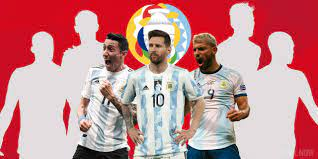

Argentina VS Brazil
Argentina won their first major title in 28 years on Saturday when an Angel Di Maria goal gave them a 1-0 win over Brazil and a record-equalling 15th Copa America crown.
Read More ....